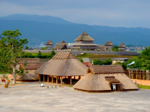

自己紹介
自己紹介
坂本啓太といいます！
今回は自己紹介と佐賀県の魅力を紹介します！
まず私は佐賀県出身、佐賀県育ちです。
伊万里幼稚園、大坪小学校、伊万里中学校、伊万里高校に通いました。
伊万里という市はとても田舎で、どの校舎もとても古く、特に大坪小学校は
都会では考えられないほどで、壁が崩れていたり床の木が古く、キシキシと
音が鳴ったりします。それに体育館はスケートコートのように滑ります。
ですが悪いことだけではありません。
校舎裏の木には夏になるとカブトムシやクワガタがいたり運動場に野良犬が入ってきたり、
大きな木が生えていて皆で木登りをしたり...
そんな中で育ったので皆とても元気がいいのです。
次に佐賀県の魅力を紹介します！
佐賀県のいいところ
佐賀県の一番の魅力は上でも書いていたように自然が豊かだということです。
そのおかげで私は写真を撮ることが好きになりました。私が撮った写真は上部の写真をクリックしてもらえれば
見ることが出来ます。
また、弥生時代の代表的な遺跡として、歴史の教科書にも登場する「吉野ヶ里遺跡」。
今では「吉野ヶ里歴史公園」として整備され、古代の暮らしを見て、感じて、体験できるスポットになっています。
歴史のロマンに駆り立てられ、多くの観光客が全国各地から訪れています。
